The three fog visuals the browser editor ships, drawn by
Engine/Editor/FogPanelSurface.h and wired into
Engine/Editor/FogInspectorPanel.cpp. They are converted 1:1 from
Experimental/ProjectZeroEditor/FogPanel.jsx,
HeightFogVisual.jsx and FogShapePanel.jsx, with the geometry read off
FogPanel.css and FogShapePanel.css and the mesh off FogShape.js.
The fog card family already existed natively; only these three were missing or approximated. The beam
chamber had drifted — 68 samples against the reference's 70, a 22 spread coefficient against 24, and a
different exposure curve — so it was brought back onto the reference's numbers. The local card drew a
bounds sketch the shipped bundle no longer carries; it is now Fog volume shape, matching
index.html.
Every pixel comes from real ImGui draw commands rasterised on the CPU by
python3 Exhibits/Workbench/Fog/RunNativeFogCards.py, not mocked up. Three of the checks drive
a synthetic mouse: pressing the profile authors Density and Falloff Height together, and clicking the
shape select advances Box to Sphere.
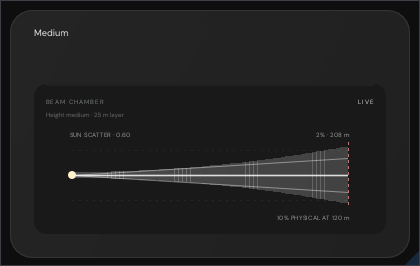
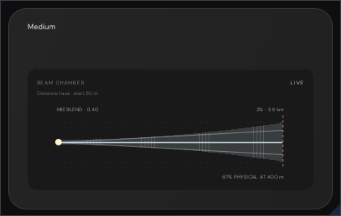
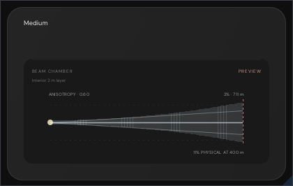
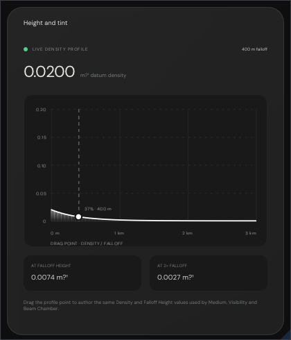
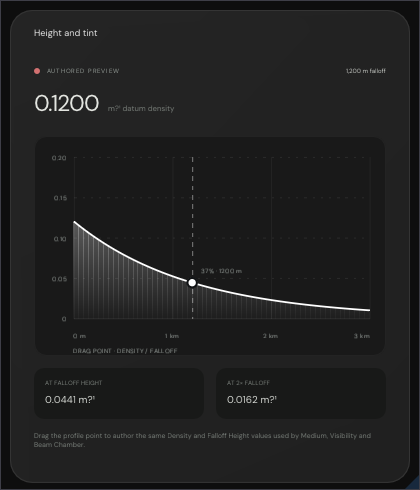
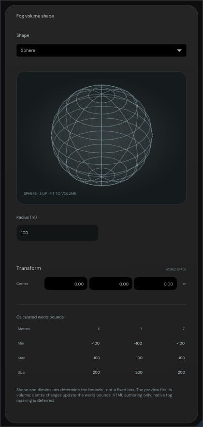
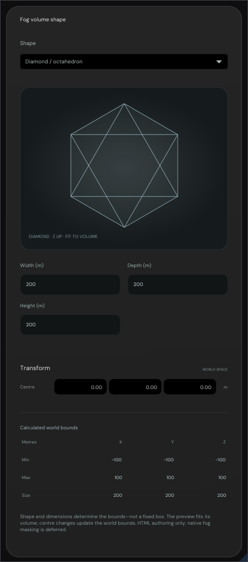
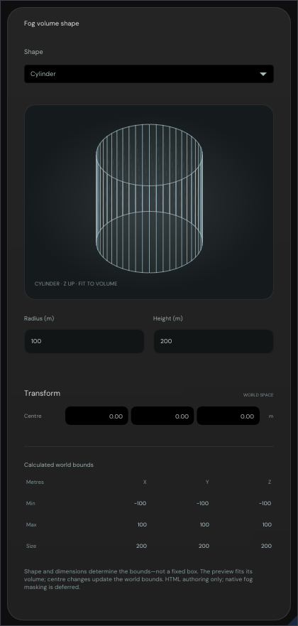
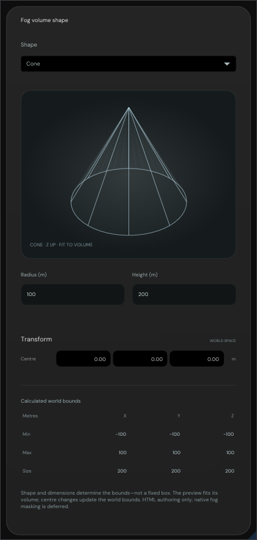
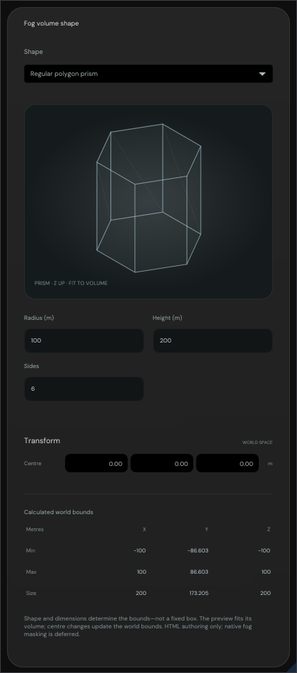
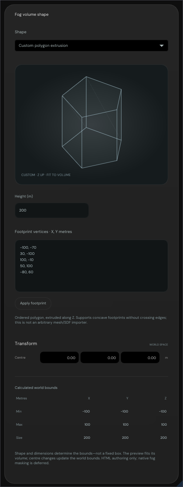